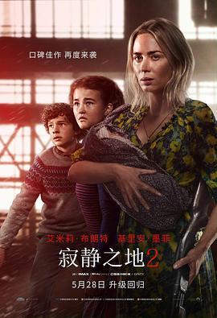

寂静之地2 / A Quiet Place: Part II
又名：无声绝境II(港) / 噤界II(台) / A Quiet Place 2
奥本海默开始这么多戏份我就知道会成为男主。。。但是这家人的小孩真是喜欢作。好在这一部有很多高光时刻，算是全季最精彩的一部了感觉。哦对了，第一部忘了说，《The Office》里的Jim竟然是男主！
作品信息
| 导演 | 约翰·卡拉辛斯基 |
| 编剧 | 约翰·卡拉辛斯基 / 斯科特·贝克 / 布莱恩·伍兹 |
| 主演 | 艾米莉·布朗特 / 基里安·墨菲 / 米利森特·西蒙兹 / 诺亚·尤佩 / 约翰·卡拉辛斯基 / 杰曼·翰苏 / 奥基里特·奥诺多瓦 / 斯科特·麦克纳里 / 扎卡里·戈林格 / 布莱克·德隆 / 加里·桑当 / 阿什利·戴克 / 韦恩·杜瓦尔 / 克兹托夫·克里斯·马杜拉 |
| 类型 | 科幻 / 惊悚 / 恐怖 |
| 制片国家/地区 | 美国 |
| 语言 | 英语 / 美国手语 |
| 上映日期 | 2021-05-28(中国大陆/美国) |
| 片长 | 97分钟 |
| IMDb | tt8332922 |
说过什么
2024-07-15 22:26:47
看过 · 时间来自广播，短评来自标记页
奥本海默开始这么多戏份我就知道会成为男主。。。但是这家人的小孩真是喜欢作。好在这一部有很多高光时刻，算是全季最精彩的一部了感觉。哦对了，第一部忘了说，《The Office》里的Jim竟然是男主！
最后一次看到是 2026-08-01T11:04:20+10:00 · 豆瓣原页